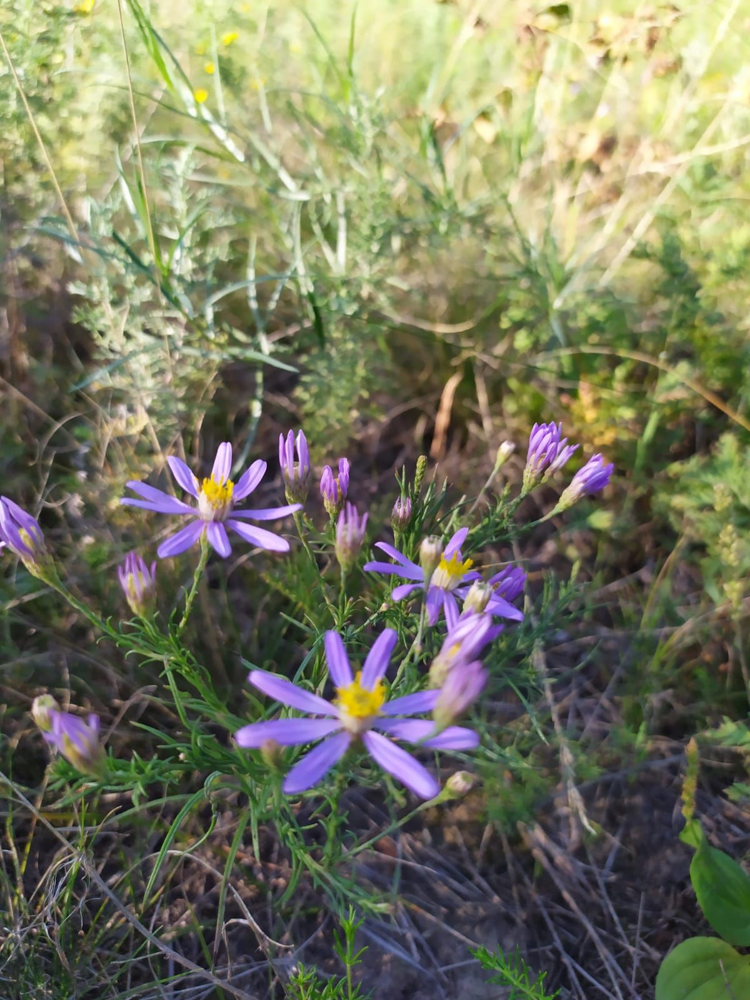

Восточноевропейско-среднеазиатский вид. Европейская часть ареала локализована в России и охватывает Волжско-Донской флористический р-н и юго-восток Волжско-Камского флористического р-на, Нижний Дон, северные районы Нижней Волги и Заволжье. В Азии произрастает на юге Сибири, северо-западе Монголии и в северных районах Средней Азии.
В средней полосе Европейской России известен из Центрального Черноземья, а также Пензенской, Тульской, Рязанской, Саратовской, Ульяновской обл., Мордовии и Татарстана. В Воронежской обл. встречается близ северо-западной границы ареала, преимущественно в западных районах.
